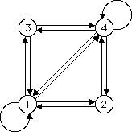

| Here are the tables and corresponding graphs for these examples. |
| We saw address i contains a scaled copy of the whole shape if in the table
all entries of the ith column are filled. |
| In the graph this condition is expressed as arrows lead from all four vertices to i. |
| In this case, we say vertex i is a rome. Remember "All roads lead
to ... ." |
| The existence of a rome guarantees that the picture can be
generated by an
IFS without memory, although in some cases infinitely many transformations are needed. |
|
 |
|  |
|
|
|